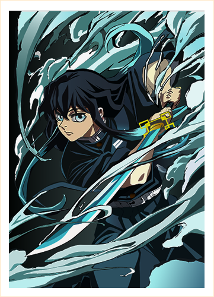
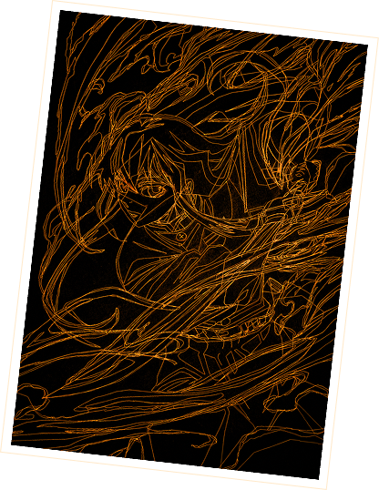
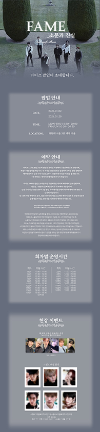
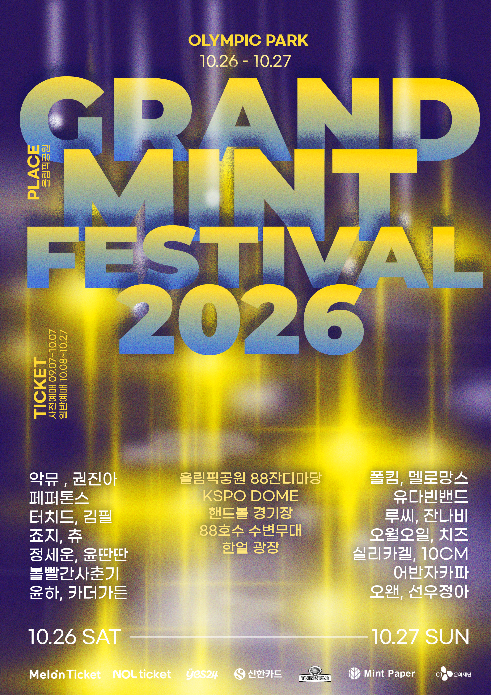

애니메이션 귀멸의 칼날 등장인물인 토키토 무이치로 특유의 몽환적인 분위기와 감정선을 시각적으로 표현한 아트웍 작업
펜툴과 그래픽 툴 활용 능력을 향상시키는 과정 속에서 단순한 인물 표현을 넘어, 색감과 분위기, 디테일 요소를 활용해 보다 완성도 높은 비주얼을 구현하는 방향으로 작업
아트웍
5일
Ai
처음 접하는 방식의 작업이었지만 아트웍 제작 과정을 반복하며 세밀한 표현과 디테일 조정의 중요성을 경험할 수 있었던 작업.특히 펜툴을 활용한 라인 작업과 색감 표현을 다듬어가는 과정 속에서 작은 요소 하나만으로도 전체 분위기와 완성도가 크게 달라질 수 있다는 점을 배우게 되었으며, 꾸준한 수정과 보완 과정의 중요성을 알게됨.

RIIZE 앨범 프로모션을 위한 팝업스토어 이벤트 페이지 디자인
RIIZE의 앨범 프로모션을 위한 팝업스토어 이벤트 페이지로, 앨범의 분위기와 컨셉을 자연스럽게 전달할 수 있도록 톤 다운된 색감과 세련된 레이아웃을 중심으로 디자인한 작업.다양한 이벤트 정보와 콘텐츠를 한 화면 안에서 효과적으로 전달하면서도 브랜드 특유의 감각적인 분위기를 유지할 수 있도록 시각적 흐름과 정보 배치에 집중해 제작.
이벤트 페이지 디자인
4일
Ai, Ps
많은 양의 정보를 하나의 페이지 안에서 가독성 있게 정리하는 방법에 대해 깊게 고민해볼 수 있었던 작업.콘텐츠의 우선순위와 사용자의 시선 흐름을 고려하며 복잡한 정보도 자연스럽게 전달할 수 있는 레이아웃 구성의 중요성을 배우게 되었고, 정보 전달과 컨셉 표현 사이의 균형을 맞추는 과정 속에서 디자인의 방향성과 레이아웃에 대한 이해를 더욱 넓힐 수 있었음.

Grand Mint Festival 2026 홍보 포스터 디자인
청춘을 노래하는 인디밴드와 그 팬들을 위한 페스티벌의 분위기를 담아내기 위해, 청춘의 반짝이는 순간들을 ‘별’이라는 시각적 요소로 표현한 작업. 따뜻하면서도 감성적인 무드를 중심으로 페스티벌의 정체성을 전달하고자 함.
포스터 디자인
4일
Ai, Ps
행사의 정보 전달과 페스티벌이 가진 감성적인 컨셉과의 균형을 고민해볼 수 있었던 작업. 컨텐츠의 가독성과 분위기 표현을 함께 고려하며 디자인의 방향성을 조율하는 방법에 대해 배우게 되었음. 또한 무빙 포스터 제작까지 확장하며 정적인 작업을 넘어 완성도 높은 시각적 표현을 경험할 수 있었음.